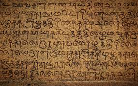

Tamil Festivals
தைப்பொங்கல்

பொங்கல் (Pongal) என்பது தமிழர்களால் சிறப்பாகக் கொண்டாடப்படும் ஓர்
அறுவடைப் பண்டிகை ஆகும்.இந்த விழா தென்னிந்தியா, இலங்கை, மலேசியா, சிங்கப்பூர், ஐரோப்பிய
நாடுகள், வட அமெரிக்கா, தென் ஆப்பிரிக்கா, மொரிசியசு என தமிழர் வாழும் அனைத்து நாடுகளிலும்
கொண்டாடப்படுகிறது. பொங்கல், உழைக்கும் மக்கள் இயற்கைத் தெய்வமாகக் கருதப்படும் சூரியனுக்கும், மற்ற
உயிர்களுக்கும் சொல்லும் ஒரு நன்றியறிதலாகக் கொண்டாடப்படுகிறது. இந்தப் பண்டிகை இந்து கடவுளான சூரிய
தேவனுக்கும் இயற்கைக்கும் அர்ப்பணிக்கப்பட்டது.
தைப்பொங்கல் வரலாறு
ஆடி மாதத்தில் தேடி விதைத்த பயிர்களின் விளைச்சலை அறுவடை செய்து பயன் அடையும் பருவமே தை மாதம் ஆகும்.
அந்த அறுவடையில் கிடைத்த நெல்லின் புத்தரிசியைச் சருக்கரை, பால், நெய் சேர்த்துப் புதுப்
பானையிலிட்டுப் புத்தடுப்பில் கொதிக்க வைத்துப் பொங்கல் சோறாக்கி சூரியனுக்கும் மாட்டுக்கும்
படைத்து உண்டு மகிழும் விழாவே பொங்கல் விழாவாகும்.
நீர் வளம் கொண்ட இடங்களில் மூன்று வேளாண்மை நடக்கும். நீர் வளமில்லா இடங்களில் மழை நீர்த்
தேக்கத்தால் ஒரு வேளாண்மைதான் விளைக்க முடியும். ஆகவே, மார்கழி (சிலை) அல்லது தை (சுறவை) மாத
அறுவடையே நாடெங்கும் நிகழும். அறுவடை முடிந்து பெற்ற புத்தரிசி, கரும்பு, மஞ்சள், பனங்கிழங்கு,
நம்முடைய கொடிவழிக் காய்கறிகள் (குறிப்பாக அவரை, புடலை, கத்திரி, வாழை, சர்க்கரை வள்ளிக் கிழங்கு,
கருணைக் கிழங்கு போன்றவையே படையலாக வைக்கப்படும். செந்நெற் பச்சரிசியைப் பெரும்பாலும் தவிடு
போக்காமல் நீர் சேர்த்துச் சமைத்து பருப்புக் குழம்புடன் உண்பதும் மரபு. பொங்கு என்ற சொல்
கொதித்தல், மிகுதல், சமைத்தல், செழித்தல் எனப் பொருள்படும். பொங்குவதால் பொங்கல். பொங்கல் விழாவை
தமிழர் என்னும் இனக்குழு தொடர்பான விழா என்று தெளிவாக உணரமுடியும். இந்த விழாவின் நடைமுறையைப்
பார்த்தால், மெய்யியற் சமயங்கள் தமிழகத்தில் நிலைகொள்ளுவதற்கு முன்னாலிருந்தே, இனக்குழு வழிபாடுகள்
நிலவிய போதே, இந்த விழாக் கொண்டாடுவது தொடங்கியிருக்க முடியும் என்பதையும் புரிந்து கொள்ள
இயலும்.
உழவர் திருநாள்
பொங்கல் விழா, மக்களால் இயல்பாகக் கொண்டாடப்படுகிறது. உழைக்கும் தமிழ் மக்கள் தாமே கண்டுணர்ந்து, தமது உழைப்பிற்கு உதவிய இயற்கைக்கும், தம்மோடு சேர்ந்து உழைத்த கால்நடைகளுக்கும், தமது நன்றியையும் மகிழ்ச்சியையும் தெரிவிக்கும் விழா. உழவர்கள் மழையின் உதவியால் ஆடி மாதம் முதல் உழைத்துச் சேர்த்த நெல்லை மார்கழியில் வீட்டிற்குக் கொண்டு வந்து தமது உழைப்பின் பயனை நுகரத் தொடங்கும் நாளே தைப்பொங்கல்.
நான்கு நாள் திருவிழா
போகி
போகி பண்டிகை என்பது பழையன கழித்தல் என்பதாக அடையாளம் கொண்டு வேளாண்மையை மேற் கொண்டவர்களால்
கொண்டாடப்படும் விழாவாகும்.
போகி பண்டிகை என்பது ‘மார்கழி’ மாதம் முடிந்து ‘தை’ மாதம் ஆரம்பிக்கும் நேரம் வருகிறது. பழையன
கழிந்து புதியது புகும் நாளாக இது கொண்டாடப்படுகிறது. பழையதாகி தேவையில்லாமல் ஆகிவிட்ட பொருட்களை
இந்நாளில் எரித்து விடுகிறோம். ஒரு பண்டிகையாக, கொண்டாட்டமாக இதைச் செய்கிறோம்.
பொங்கல் பண்டிகை நான்கு நாள் பண்டிகையாகும். மார்கழி கடைசி நாளன்று போகி கொண்டாடப்படுகிறது.
அந்நாளில், பழையன கழித்து புதியன புகுத்தல் வழக்கம்.ஆயர்கள் இந்திரவிழாவை முடித்து சூரியவழிபாடை
தொடர்ந்தனர்.
அக்காலத்தில் போகியன்று சில கிராமங்களில் ஒப்பாரி வைக்கும் பழக்கம் இருந்தது. அப்போது அழுவது
எதனால், என்பதனை ஆராய்ந்த வரலாற்று அறிஞர்கள், அந்நாளைப் புத்தர் இறந்த தினமென்று கண்டறிந்துள்ளனர்.
தைப்பொங்கல்
மாட்டுப் பொங்கல்
உழவுத் தொழிலுக்கு உறுதுணையாக விளங்கும் ஆவினத்திற்கு நன்றி கூறும் நாளே இந்நாளாகும். பொங்கலிட்ட
பிறகு எச்சில் தண்ணீர் தெளித்தல் என்றொரு மரபு மதுரை மாவட்டத்தில் உண்டு. 'பொங்கலோ பொங்கல் !
மாட்டுப் பொங்கல்!
பட்டி பெருக! பால் பானை பொங்க! நோவும் பிணியும் தெருவோடு போக!' என்று கூறி மாடு பொங்கல் உண்ட
எச்சில் தண்ணீரை தொழுவத்தில் தெளிப்பர்.
தை மாத முதல் நாள் பொங்கல் கொண்டாடப்படுகிறது.
காணும் பொங்கல்
இந்நாளில் மக்கள் தங்கள் உற்றார் உறவினரைச் சென்று சந்தித்து தங்கள் அன்பையும் உணவுப் பண்டங்களையும் பகிர்ந்து கொள்வர். இது பொங்கல் கொண்டாட்டங்களில் நான்காம் நாள் இடம்பெறும்.இது பொதுவாக இந்தியாவிலேயே கொண்டாடப்படுகிறது.
சங்க இலக்கியங்களில் தைப்பொங்கல்
“தைஇத் திங்கள் தண்கயம் படியும்” என்று நற்றிணை
“தைஇத் திங்கள் தண்ணிய தரினும்” என்று குறுந்தொகை
“”தைஇத் திங்கள் தண்கயம் போல்” என்று புறநானூறு
“தைஇத் திங்கள் தண்கயம் போல” என்று ஐங்குறுநூறு
“தையில் நீராடி தவம் தலைப்படுவாயோ” என்று கலித்தொகை
Experience the vibrant and energetic rhythms of tribal dance in this captivating performance. Celebrating the rich cultural heritage of indigenous communities, this video showcases the traditional movements, colorful costumes, and dynamic music that define tribal dances. Immerse yourself in the spirit of unity, expression, and joy as dancers tell stories through their mesmerizing choreography. Join us on a journey of discovery and appreciation for the diversity and beauty of tribal cultures around the world.
Experience the vibrant and energetic rhythms of tribal dance in this captivating performance. Celebrating the rich cultural heritage of indigenous communities, this video showcases the traditional movements, colorful costumes, and dynamic music that define tribal dances. Immerse yourself in the spirit of unity, expression, and joy as dancers tell stories through their mesmerizing choreography. Join us on a journey of discovery and appreciation for the diversity and beauty of tribal cultures around the world.
Experience the vibrant and energetic rhythms of tribal dance in this captivating performance. Celebrating the rich cultural heritage of indigenous communities, this video showcases the traditional movements, colorful costumes, and dynamic music that define tribal dances. Immerse yourself in the spirit of unity, expression, and joy as dancers tell stories through their mesmerizing choreography. Join us on a journey of discovery and appreciation for the diversity and beauty of tribal cultures around the world.
Experience the vibrant and energetic rhythms of tribal dance in this captivating performance. Celebrating the rich cultural heritage of indigenous communities, this video showcases the traditional movements, colorful costumes, and dynamic music that define tribal dances. Immerse yourself in the spirit of unity, expression, and joy as dancers tell stories through their mesmerizing choreography. Join us on a journey of discovery and appreciation for the diversity and beauty of tribal cultures around the world.